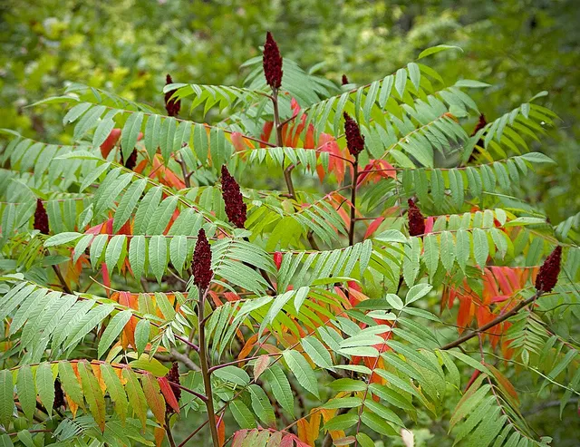

Drinks · Popular in Northeast and Midwest
Sumac lemonade
Sumac lemonade is made with wild staghorn sumac, a favourite in Northeast and Midwest.

How do you make sumac lemonade?
Rub sumac clusters in cold water for an hour, strain through a cloth and sweeten. Pink and tart.
Wild ingredients
- Staghorn sumac (Rhus typhina): in season August to September
Watch the recipe

Video: PBS Food on YouTube